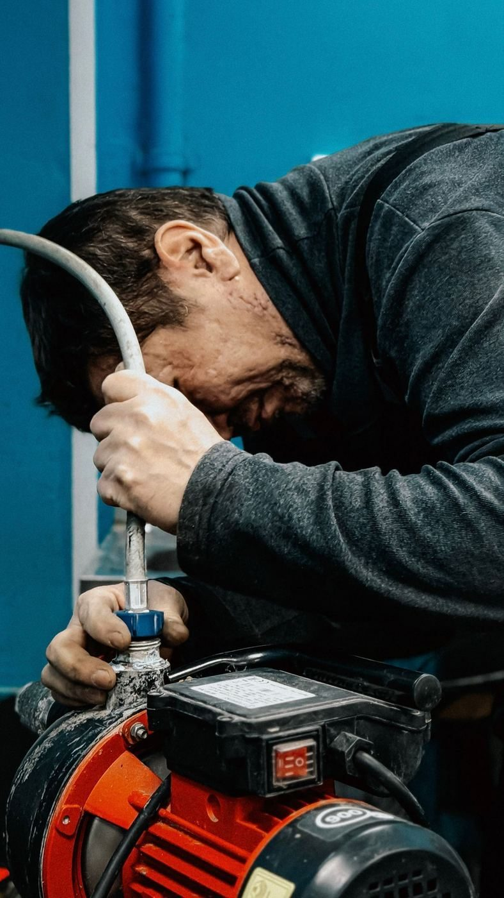
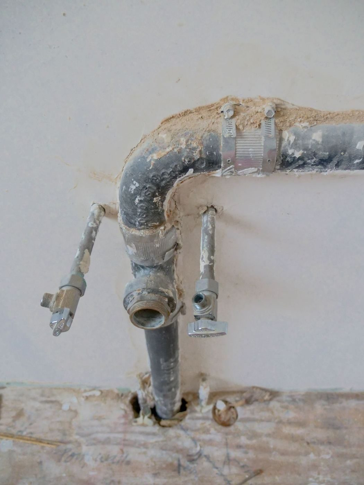
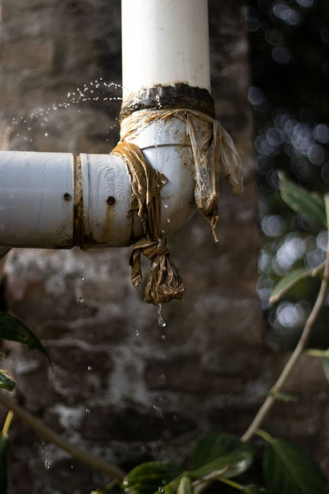

Emergency plumber in Charlotte
24 HR Emergency Plumber Charlotte handles emergency plumbing repair in Charlotte, plus drain cleaning, plumbing installation, and garbage disposal repair.

24 HR Emergency Plumber Charlotte is an emergency plumbing business at 1960 Randolph Rd in Charlotte. The business handles emergency plumbing repair, drain cleaning, plumbing installation, and garbage disposal repair, plus leak detection, water heater repair, pipe repair, and repiping.


1960 Randolph Rd, Charlotte, NC 28207
Available around the clock for emergency calls